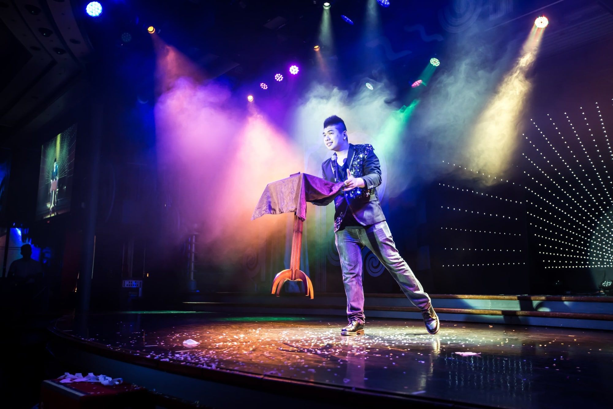
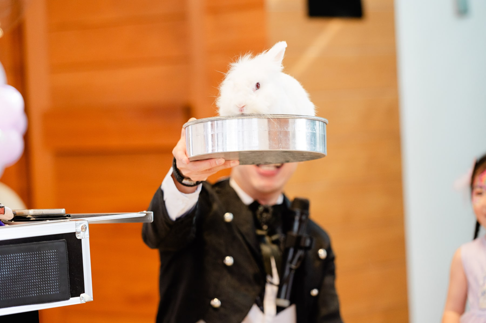
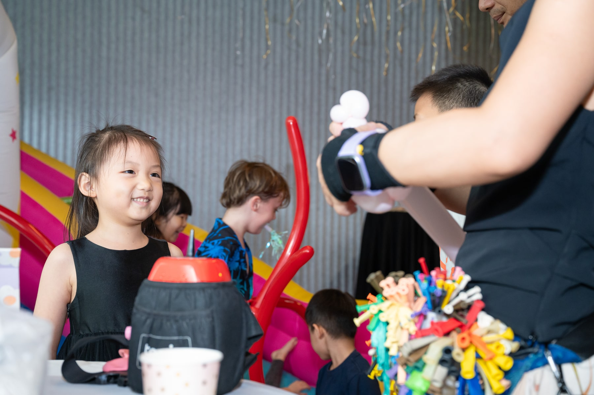
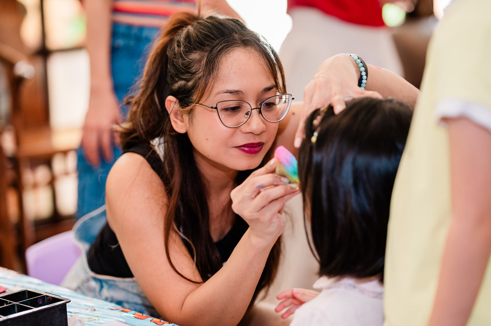
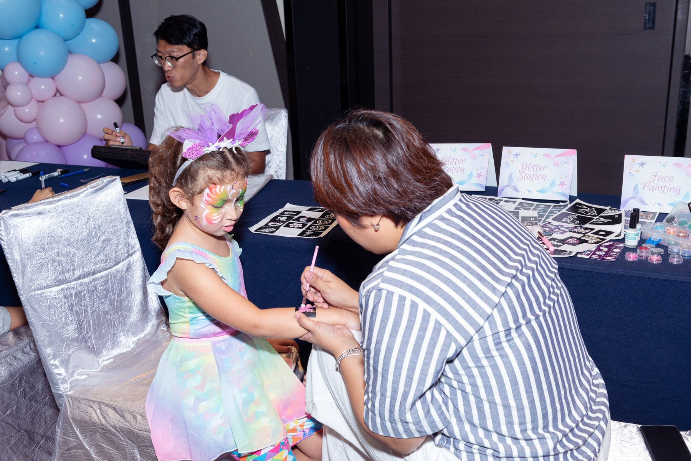

Kids party magic · Singapore
Little moments.
Big magic.
Wide eyes. Happy squeals. A birthday they’ll remember. Step into the wonderful world of Magic of Markson.


Their spotlight.
The signature magic show
More than a show.
A moment of wonder.
A room full of laughter, a child at the centre of the magic, and a few surprises nobody saw coming.
- 01
Everyone’s in on the fun
Interactive magic, comedy and visual surprises for children and grown-ups.
- 02
A birthday star is born
Special moments that invite the birthday child into the show.
- 03
A fluffy little finale
Choose the live bunny show, with a patting and photo opportunity afterwards.
Make a whole day of it
Every party deserves
an extra sprinkle.

Balloon twisting
Animals, flowers, swords and characters, shaped into a colourful keepsake for each child.

Face & arm painting
From bright butterflies to favourite characters, a chance for every little personality to shine.

Glitter tattoos
Stars, butterflies and playful designs for guests who love a little shimmer.
Meet the man behind the magic
Magician.
Dad.
Memory maker.
A first magic trick at seven started it all. Today, Markson brings that same spark of discovery to families across Singapore—and understands just how much a child’s birthday means.
A little about Markson
Not just the kids but the adults were laughing and are amazed!Candyce Toh · Parent & influencerShared on Magic of Markson’s website
Real parties. Real wonder.
You can almost
hear the laughter.
A few favourite moments from Magic of Markson’s celebrations.
A few helpful answers
Before the
big reveal.
Can we book a show without animals?
Yes. Markson offers a non-animal version of the kids magic show. Mention your preference when enquiring.
Will the birthday child take part?
The show includes a special opportunity for the birthday child to join Markson. Share any preferences with the team so they can help plan a comfortable experience.
Where does Markson perform?
Magic Of Markson serves parties across Singapore, including homes, schools and family events. Send your venue details so the team can advise on your space.
How do I check availability and pricing?
Send your date, time, location and the activities you are interested in through WhatsApp or email. The team will confirm availability and provide a quote.
Your next happy memory starts here
Let’s make their day
a little more magical.
Tell us the date and the place. We’ll help you put the fun in the party.
Check your party date